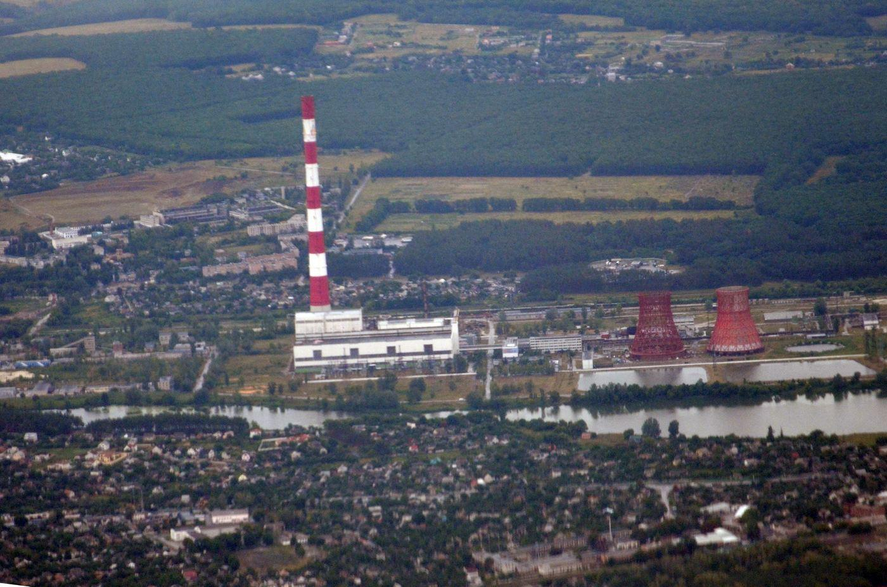
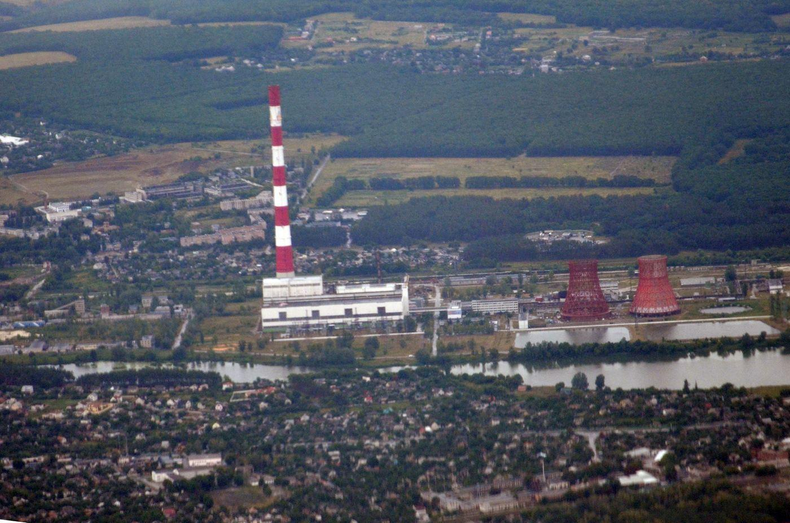

Про підприємство
ПрАТ «ХАРКІВСЬКА ТЕЦ-5» — одна з найбільших теплоелектроцентралей України, розташована поблизу села Подвірки Харківського району, на лівому березі річки Уди.
Станція працює за принципом когенерації — одночасного виробництва електричної та теплової енергії, що значно підвищує ефективність використання палива.
ТЕЦ забезпечує електроенергією та теплом значну частину Харкова, включаючи житлові райони, промислові підприємства та об'єкти соціальної інфраструктури.
Основне паливо: природний газ
Резервне паливо: мазут М40/М100
 

Технічні параметри
| Показник | Значення |
|---|---|
| Встановлена потужність | 540 МВт |
| Теплова потужність | 1420 Гкал/год |
| Кількість енергоблоків | 3 |
| Потужність блоків | 2 × 120 МВт + 300 МВт |
| Висота димової труби | 330 м |
| Площа території | 218 га |
| Напруга видачі | 10,5 / 110 / 220 кВ |
Інфраструктура
Градирні
Висота близько 81 м. Забезпечують охолодження циркуляційної води енергоблоків.

Машинний зал
Оснащений турбінами Т-110/120-130 (2 шт.) та Т-250/300-240 (1 шт.).
Історія розвитку
Будівництво Харківської ТЕЦ-5 розпочалося у 1972 році в рамках масштабної програми розвитку енергетичної інфраструктури міста Харкова.
28 грудня 1979 року було введено в експлуатацію перший енергоблок потужністю 120 МВт. У 1980 році введено другий аналогічний блок.
2 вересня 1990 року запущено третій енергоблок потужністю 300 МВт — один із найбільш потужних у своєму класі на той час.
Димова труба висотою 330 метрів стала однією з найвищих промислових споруд України та найвищою у Східній Україні.
У різні роки станція модернізувалася, впроваджувалися нові системи контролю викидів та автоматизації виробництва.
Станція є стратегічним об'єктом енергетичної інфраструктури Харківського регіону та відіграє важливу роль у забезпеченні енергетичної безпеки області.
Контакти
Повна назва: ПрАТ «ХАРКІВСЬКА ТЕЦ-5»
Телефон:
+38 (057) 372-10-29
+38 (057) 730-50-59
Факс: +38 (057) 731-42-98
Email: mbox@tec5.kharkov.ua
Адреса: Харківська область, Харківський район, с. Подвірки
Режим роботи: безперервний виробничий цикл